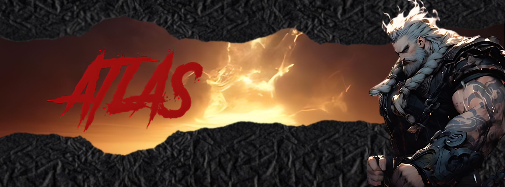
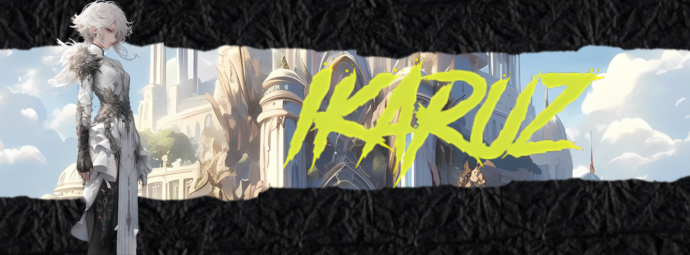
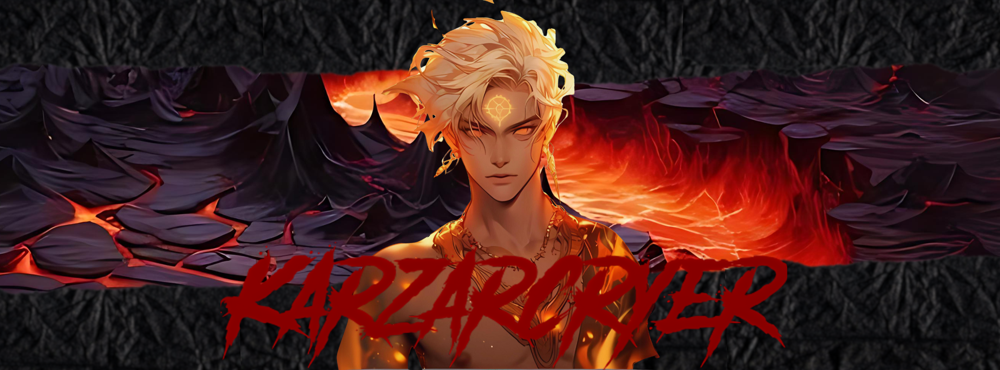

A Era do Silêncio
Quando os deuses ainda sussurravam entre si

O Chamado das Runas
Antigas inscrições guardam o segredo da criação

A Grande Confluência
Três raças. Um destino.
O Mundo de
Um mundo onde antigas profecias moldam o destino dos que ousam desafiá-lo.
Escolha sua raça. Forje sua lenda.
Role para explorar
Quando os deuses ainda sussurravam entre si
Antigas inscrições guardam o segredo da criação
Três raças. Um destino.
Klayrah é um plano de existência onde magia e realidade se entrelaçam em padrões que desafiam a razão. Desde o colapso das Torres Celestiais, as três grandes raças disputam territórios, segredos e a própria essência do que significa existir neste mundo fragmentado.
Cada raça carrega séculos de história, dor e glória. Escolha seu legado.

Colossais e inabaláveis, os Atlas são os ancestrais de pedra e vontade. Erguem montanhas com suas mãos e carregam o peso de impérios em seus ombros. Sua sabedoria é geológica — medida em eras, não em anos.

Nascidos entre as nuvens e os relâmpagos, os Ikaruz dominam os céus com uma graça mortal. Sua agilidade é sobrenatural e sua conexão com os ventos permite feitos que desafiam a física — e o bom senso.

Mestres das artes sombrias e das fendas entre planos, os Karzarcryer habitam os espaços esquecidos da realidade. Tecem ilusões tão perfeitas que até os deuses hesitam em confiar nos seus próprios sentidos.
Crie sua ficha de personagem e comece sua jornada em Klayrah agora mesmo.
Começar Agora